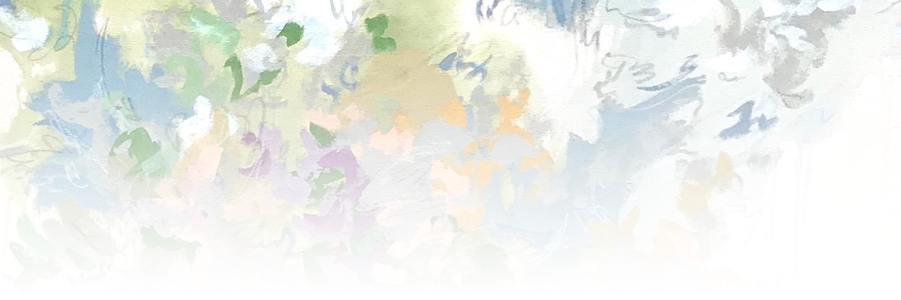

MERN
JavaScript
MongoDB
Mongoose
Express
React
Node
Python
Postgre SQL
Bootstrap
VS Code
Postman
Postico
Photoshop
Illustrator
Animate
I am a software engineer with a creative curiosity that allows me to look at problems from many, unique perspectives. I look for the “why” behind the “how” and use this information to design intuitive solutions. I am an adaptable teammate who values constructive communication.
I have a degree in biology from Texas State University, and after graduation, I worked on a variety of small, organic farms in Central Texas. It was while working for a start-up farm in East Austin that I first began looking into software engineering. As a team of only three people, it was an easy decision to “automate the boring stuff.” However, our available capital prevented us from fully investing in proprietary farm management systems and software. We started looking into Arduino and other IoT platforms but had to pause operations due to COVID-19.
With the unexpected, ample time I found myself with during quarantine, I continued researching software development and built a few basic websites for practice. After about a year of dabbling, I decided to give it my all and began really diving into software development. I was referred to General Assembly and a few weeks later I was in a Software Engineering Immersive course. It is probably the best decision I have ever made. I've learned so much in just over a year of practice and looking forward to spending the rest of my career developing my skills, learning new technologies, and working with coders from a variety of backgrounds.
MERN
Feedback Loop is a full-stack MERN app with CRUD functionality that creates a blogging environment for coding students and experts to ask questions, get feedback, and show off their projects to other software engineers. Users can make posts and interact with other users' posts by liking and making comments. The backend has two databases - one for users and one for posts. Each post, comment, and like is stored with a user ID and username to allow for tracking who has commented and liked on different posts.
Working on this with a small team allowed us to practice agile, collaborative development from different states and time-zones. Having a team also allowed us to complete a fully functional social media app in just under a week. Building a full stack app from scratch really solidified the process of creating and connecting a separate back end and front end in my mind.
React
PaperTrail is a React app that accesses the Google Civic Data API and the Open FEC API to get local representatives and campaign funding information from an address entered by the user. I was inspired to make this after visiting the Open FEC interface and seeing that political advertising data from PACs were listed as individual records. I created an algorithm that goes through individual records and totals them by committee, amount spent, and on how many ads. The data for each representative is listed in separate columns to show which contributions were in support of or against the representative. I also do a quick scan of the campaign funding totals data that shows how much money was raised, spent, and leftover during each campaigning period. Each representatives' page also contains a header that lists their mailing address, a contact number, and social media links, if they're recorded in the Google Civic Data Database.
This was my first React app and I honestly had a blast. The ability to reuse components and nest functions within components that are the only ones who need them while simultaneously being able to pass global functions into different components through props was an absolute game changer. Using two different APIs within this app proposed a few problems early on, but the trusty 'console.log()' gave me a deep understanding of how data is retrieved from an API as well as highlighting that every API sends data slightly differently.
JavaScript
As a multi-instrumentalist, I've always used ear trainers when away from my instruments to practice identifying notes by ear. I was inspired to create this after learning about the AudioContext constructor in Vanilla JS. While AudioContext is typically used to handle uploading music and sound effects to a webpage, there is also an 'oscillator' method that generates a tone of a specified frequency directly from the browser.
I used this to generate randomized (each round) tones from C3 to B5, depending on the user-selected difficulty and note range. In addition to having the ability to practice by identifying single notes, users can also practice with major chords, minor chords, or a combination of both. There is also an 'infinite mode' that automatically restarts rounds and displays a percentage of correct notes on the screen.